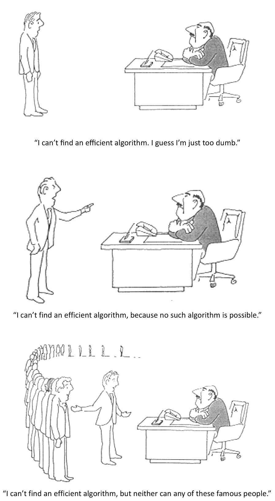
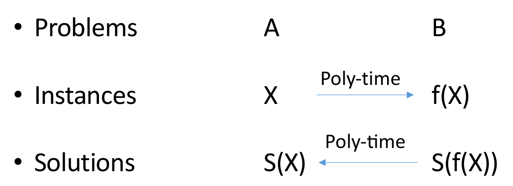
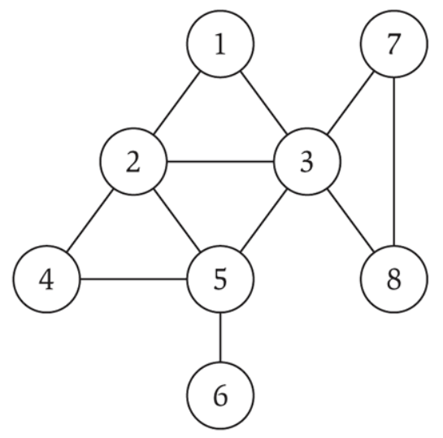
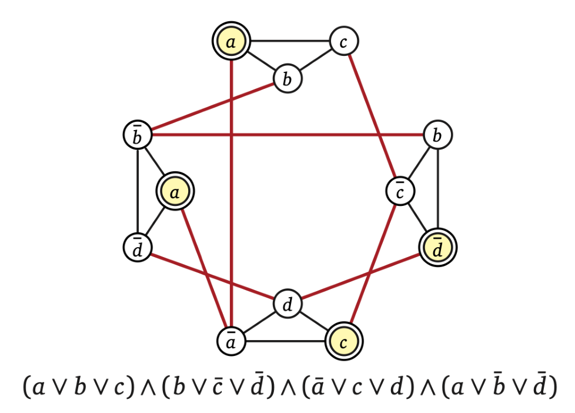
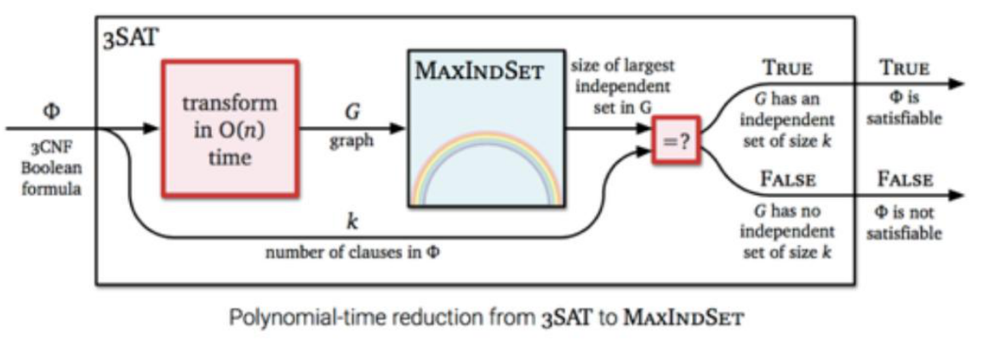
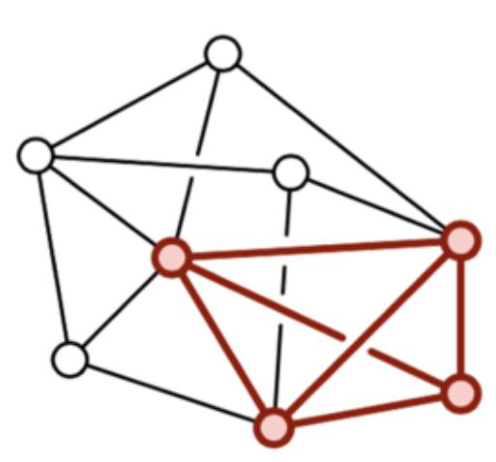
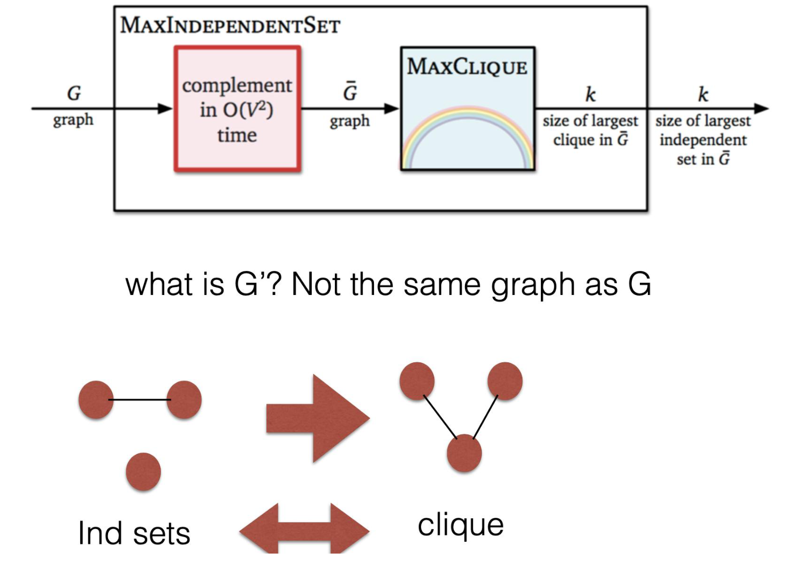
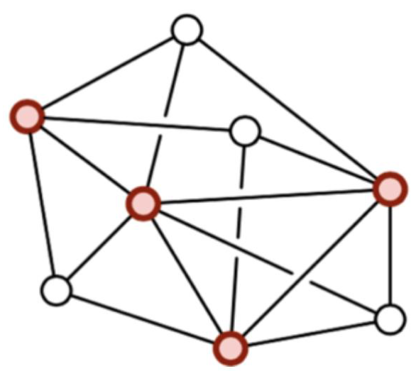
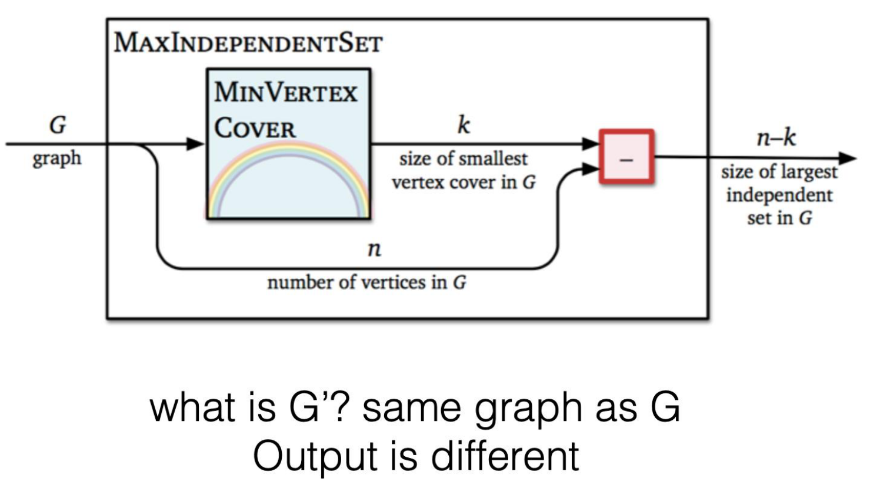
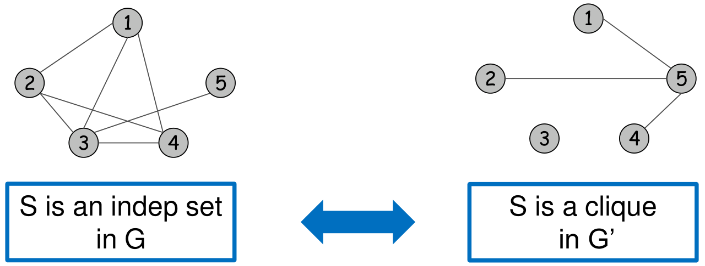

본 포스트는 서울대학교 Chenglin Fan 교수님의 4190.407 Algorithms (Design and Analysis of Algorithms) 강의 자료(18강 The Limits of Algorithms-NP Hardness, 총 48장)를 바탕으로, 강의를 처음 듣는 독자도 논리적 흐름을 따라갈 수 있도록 재구성한 것입니다. 1강 표지에 “Part of Slides Borrowed From Mary Wootters”라고 밝혀 두었듯 이 시리즈의 슬라이드는 상당 부분 Stanford의 Mary Wootters 교수님 자료에서 가져온 것이지만, 이번 강의는 표지를 빼면 생김새가 서로 다른 세 묶음의 슬라이드로 이루어져 있고 각 묶음의 출처는 따로 적혀 있지 않습니다. 주황색 제목의 4:3 슬라이드(2–33), 회색 머리띠를 두른 16:9 화면 캡처 슬라이드(34–44), 남색 제목에 오른쪽 아래 자체 쪽 번호 9–12가 찍힌 4:3 슬라이드(45–48)입니다. 본문의 1장은 도입 슬라이드 2–5를, 2–5장은 강의가 NP-Hardness Part 1–4로 나눈 네 구간(Problem in P: 2-SAT, Problems in NP, NP-Completeness, Reductions)을 차례로 따르며, 슬라이드 번호는 PDF의 쪽 순서를 씁니다.
한 줄 요약 (TL;DR)
“어떤 문제가 NP-완전 문제만큼 어렵다는 것은, 이미 NP-완전인 문제를 그 문제로 다항 시간에 환원해서 보입니다.”
절마다 리터럴이 두 개인 2-SAT은 각 절을 두 개의 함의로 바꾼 함의 그래프에서 어떤 \(x\)와 \(\lnot x\)가 서로에게 도달하는지만 보면 되므로 다항 시간에 풀리지만, 리터럴이 세 개인 3-SAT은 거의 모든 할당을 시도하는 것 말고는 알려진 방법이 없습니다. 둘 다 할당이 주어지면 다항 시간에 검사할 수 있으므로 NP에 속하고, \(\mathrm{P} \subseteq \mathrm{NP}\)이지만 \(\mathrm{P} = \mathrm{NP}\)인지는 100만 달러가 걸린 미해결 문제입니다. NP-완전 문제는 NP의 모든 문제가 다항 시간에 환원되는 NP의 문제여서, 하나라도 다항 시간에 풀리면 \(\mathrm{P} = \mathrm{NP}\)가 됩니다. 강의는 3-SAT을 독립 집합으로 환원해(절마다 삼각형, 리터럴과 그 부정 사이에 간선, 목표 크기 = 절의 수) 독립 집합의 NP-완전성을 보이고, 이 어려움을 여그래프로 클리크에, 여집합으로 정점 덮개에, 간선을 원소로 삼아 집합 덮개에 차례로 옮깁니다.
1. 알고리즘의 한계 (The Limits of Algorithms)
1.1 다항 시간 알고리즘 (Polynomial-Time Algorithms)
슬라이드 2는 지금까지의 수업 전체를 한 문장으로 돌아봅니다. 이 수업은 다항 시간 알고리즘(polynomial-time algorithm)으로 풀 수 있는 문제들에 관한 것이었습니다.
- 다항 시간 알고리즘이란 크기가 \(n\)인 어떤 입력이 주어져도, 어떤 상수 \(c \ge 0\)에 대해 \(O(n^c)\) 시간에 끝나는 알고리즘입니다.
- 지난 강의들의 알고리즘 대부분이 여기에 속합니다. MergeSort는 \(O(n \log n)\)(2강), Floyd–Warshall은 \(O(n^3)\)(12강), 지난 강의의 지연 수락 알고리즘은 \(O(n^2)\)(17강)이었습니다.
- “입력 크기”를 엄밀히 따지면 예외도 있습니다. 배낭 문제(13강)를 푸는 동적 계획법의 \(O(nW)\)는 용량 \(W\)의 값에 비례하므로, \(W\)를 적는 데 드는 자릿수 \(\log W\)에 대해서는 다항식이 아닙니다(포스트에서 덧붙이는 주의입니다).
이어서 슬라이드는 묻습니다. 모든 문제를 다항 시간에 풀 수 있을까요? 답은 짧습니다. 아니요!
슬라이드의 “No!”는 일반론으로는 증명된 사실입니다. 예컨대 프로그램이 멈추는지 판정하는 정지 문제(halting problem)는 어떤 알고리즘으로도 풀 수 없고, 시간 계층 정리(time hierarchy theorem)에 따르면 지수 시간이 반드시 필요한 문제도 있습니다(포스트에서 덧붙이는 배경입니다). 그러나 이 강의의 주인공인 3-SAT 같은 NP-완전 문제가 다항 시간에 풀리지 않는다는 것은 증명되지 않았습니다. 4.1절에서 보듯 이것은 \(\mathrm{P} \neq \mathrm{NP}\)라는, 널리 믿어지지만 아직 증명되지 않은 추측과 같은 말입니다.
1.2 찾지 못했을 때의 세 가지 대답 (Three Answers)
슬라이드 3–5는 같은 장면을 세 번 그린 만화입니다. 상사가 효율적인 알고리즘을 찾아오라고 시켰고, 직원은 찾지 못했다고 보고하는데, 그 보고의 말이 장면마다 다릅니다.

세 대답을 차례로 보면 다음과 같습니다.
- 첫째 대답 — 내가 부족해서 못 찾았다. 상사에게 가장 들려주기 싫은 대답입니다. 더 뛰어난 사람을 고용하면 찾을지도 모르기 때문입니다.
- 둘째 대답 — 그런 알고리즘은 존재할 수 없다. 가장 강력한 대답이지만, 이것을 증명하기는 대개 너무 어렵습니다. 3-SAT에 대해 이 말을 증명하면 그 자체로 \(\mathrm{P} \neq \mathrm{NP}\)를 증명한 것이 됩니다(4.1절).
- 셋째 대답 — 유명한 사람들도 아무도 못 찾았다. 불가능성을 증명하지는 못해도, 이 문제를 풀면 수많은 사람이 풀지 못한 문제들을 한꺼번에 풀게 된다는 것을 보이면 상사를 설득할 수 있습니다. 그것을 보이는 도구가 4장의 NP-완전성과 5장의 환원입니다.
슬라이드에는 출처가 적혀 있지 않지만, 이 세 컷은 Garey와 Johnson의 책 Computers and Intractability(1979) 1장에 실린 만화로 널리 알려져 있습니다(포스트에서 덧붙이는 정보입니다).
2. P에 속하는 문제: 2-SAT (Part 1. Problem in P: 2-SAT)
슬라이드 6은 강의를 NP-Hardness라는 이름 아래 네 부분으로 나누고, 첫 부분이 P에 속하는 문제: 2-SAT임을 알립니다.
2.1 P, NP, NP-완전 (P, NP, NP-Complete)
슬라이드 7은 오늘 다룰 개념을 한 장에 늘어놓습니다.
- 어려운 문제(hard problems): 다항 시간에 풀 수 없는 문제
- 문제 클래스(problem classes)
- P — 다항 시간에 풀 수 있는 문제(“쉬운” 문제)
- NP — 해를 다항 시간에 검사할 수 있는 문제
- NP-완전(NP-complete) — NP에서 “가장 어려운” 문제들
- 환원(reductions): “어려움”을 보이는 데 씁니다.
- 더 자세한 내용은 Sipser의 Introduction to the Theory of Computation을 보라고 권합니다.
이 목록은 포스트의 지도이기도 합니다. P는 이 장에서 2-SAT으로, NP는 3장에서 3-SAT과 여러 그래프 문제로, NP-완전은 4장에서, 환원은 5장에서 다룹니다.
2.2 “쉬운” 문제: 2-SAT (An “Easy” Problem: 2-SAT)
슬라이드 8은 먼저 용어를 정합니다.
- 변수(variable): \(X, Y, Z\)처럼 참(T) 또는 거짓(F) 값을 받는 기호입니다.
- 리터럴(literal): 변수 자신(\(X\)) 또는 그 부정(\(\lnot X\), “not X”)입니다. \(X\)는 \(X\)가 참일 때 참이고, \(\lnot X\)는 \(X\)가 거짓일 때 참입니다. 슬라이드는 부정을
~X로 적지만, 포스트에서는 \(\lnot X\)로 씁니다. - 2-절(2-clause): 리터럴 두 개를 OR(\(\lor\))로 묶은 것입니다(예: \(X \lor \lnot Z\)). 두 리터럴 중 하나라도 참이면 참이고, 둘 다 거짓일 때만 거짓입니다.
슬라이드는 OR의 진리표를 빈칸으로 남겨 둡니다. 채우면 다음과 같습니다.
| \(p\) | \(q\) | \(p \lor q\) |
|---|---|---|
| T | T | T |
| T | F | T |
| F | T | T |
| F | F | F |
이제 문제를 정의합니다.
- 2-SAT의 입력: 2-절들을 AND(\(\land\))로 묶은 논리식
- 2-SAT의 질문: 논리식을 참으로 만드는 — 곧 모든 절을 충족시키는 — 변수의 할당(assignment)이 있는가?
- 예: \((a \lor \lnot b) \land (\lnot b \lor c) \land (\lnot a \lor d) \land (\lnot d \lor \lnot c)\)
이처럼 절들을 AND로 묶은 논리식을 논리곱 표준형(conjunctive normal form, CNF)이라고 하고, 절마다 리터럴이 3개면 3-CNF라고 부릅니다. 5.4절의 슬라이드가 쓰는 3CNF가 이것입니다(용어는 포스트에서 덧붙였습니다). 논리식을 참으로 만드는 할당을 충족 할당(satisfying assignment), 그런 할당이 있는 논리식을 충족 가능(satisfiable)하다고 합니다. 아래에서는 변수의 수를 \(n\), 절의 수를 \(m\)으로 씁니다(슬라이드에는 없는 포스트의 기호입니다).
슬라이드 9는 이 예로 연습 문제를 냅니다. 위 논리식을 충족시키는 할당을 찾거나, 없다면 왜 없는지 논증하세요.
포스트에서 풀어 보면 할당은 있습니다. 모든 변수를 거짓으로 두면 네 절이 각각 \(\lnot b\), \(\lnot b\), \(\lnot a\), \(\lnot d\) 덕분에 참이 됩니다. 더 흥미로운 것은 \(b\)는 반드시 거짓이어야 한다는 사실입니다. \(b\)를 참으로 두면 강제되는 값이 줄줄이 이어지기 때문입니다.
- 첫째 절 \(a \lor \lnot b\)에서 \(\lnot b\)가 거짓이므로 \(a\)가 참이어야 합니다.
- 둘째 절 \(\lnot b \lor c\)에서 \(c\)가 참이어야 합니다.
- 셋째 절 \(\lnot a \lor d\)에서 \(a\)가 참이므로 \(d\)가 참이어야 합니다.
- 그러면 넷째 절 \(\lnot d \lor \lnot c\)의 두 리터럴이 모두 거짓이 되어 모순입니다.
\(b\)를 거짓으로 두면 앞의 두 절은 저절로 참이 되고, 남는 \((\lnot a \lor d) \land (\lnot d \lor \lnot c)\)를 충족시키는 \((a, c, d)\)는 (T, F, T), (F, T, F), (F, F, T), (F, F, F)의 네 가지입니다. \(2^4 = 16\)가지 할당을 모두 따져 보면 이 논리식의 충족 할당은 정확히 이 네 가지입니다. “한 리터럴이 참이면 다른 리터럴이 참이어야 한다”는 이 강제의 사슬이 다음 절의 함의 그래프로 그대로 옮겨집니다.
2.3 함의 그래프 (Implication Graph)
슬라이드 10–11은 2-SAT이 “쉬운” 이유, 곧 다항 시간에 풀리는 이유를 설명합니다. 출발점은 2-절 하나 \((x \lor y)\)를 다르게 읽는 것입니다.
- \(x\)가 거짓이면 \(y\)는 참이어야 합니다: \(\lnot x \to y\)
- \(y\)가 거짓이면 \(x\)는 참이어야 합니다: \(\lnot y \to x\)
따라서 2-절은 두 함의의 AND와 동치입니다.
\[ (x \lor y) \;\equiv\; (\lnot x \to y) \land (\lnot y \to x) \]
동치는 함의의 정의 \(p \to q \equiv \lnot p \lor q\)에서 바로 나옵니다. \(\lnot x \to y \equiv \lnot\lnot x \lor y \equiv x \lor y\)이고, \(\lnot y \to x \equiv y \lor x\)입니다.
위 계산이 보여 주듯 두 함의는 각각 따로도 절 \((x \lor y)\)와 동치입니다. 서로가 서로의 대우(contrapositive)이기 때문입니다. 그런데도 둘을 모두 간선으로 넣는 것은, 그래프에서는 “참”이라는 정보가 간선 방향으로만 전파되기 때문입니다. \(\lnot x \to y\)만 넣으면 “\(x\)가 거짓”이라는 정보에서는 \(y\)로 갈 수 있지만, “\(y\)가 거짓”이라는 정보에서 \(x\)로 가는 길은 없습니다. 두 방향을 모두 넣어 두면 간선 \(p \to q\)마다 짝 간선 \(\lnot q \to \lnot p\)가 있게 되고, 2.4절의 판정 규칙은 이 대칭성에 기대어 증명됩니다.
이 관찰로 2-SAT 인스턴스에서 함의 그래프(implication graph) \(G\)를 만듭니다(슬라이드 11).
- 각 리터럴이 정점입니다. 변수 \(x\)마다 정점 \(x\)와 \(\lnot x\)가 생깁니다.
- 각 절은 간선 2개입니다. 예를 들어 \((x \lor y)\)는 간선 \((\lnot x, y)\)와 \((\lnot y, x)\), 곧 \(\lnot x \to y\)와 \(\lnot y \to x\)가 됩니다. 유향 그래프입니다.
- \(G\)에서 \(x\)에서 \(y\)로 가는 경로는 “\(x\)가 참이면 \(y\)도 참이어야 한다”는 뜻입니다. 간선 하나하나가 그런 함의이고, 함의는 이어 붙일 수 있기 때문입니다.
슬라이드 12는 예 \((a \lor \lnot b) \land (b \lor c) \land (\lnot a \lor d) \land (\lnot d \lor \lnot c)\)를 들고, 그래프를 그릴 자리를 비워 둡니다. 2.2절의 예와는 둘째 절만 \((\lnot b \lor c)\)에서 \((b \lor c)\)로 다릅니다. 슬라이드의 규칙대로 간선을 만들면 다음과 같습니다.
| 절 | 간선 ① | 간선 ② |
|---|---|---|
| \(a \lor \lnot b\) | \(\lnot a \to \lnot b\) | \(b \to a\) |
| \(b \lor c\) | \(\lnot b \to c\) | \(\lnot c \to b\) |
| \(\lnot a \lor d\) | \(a \to d\) | \(\lnot d \to \lnot a\) |
| \(\lnot d \lor \lnot c\) | \(d \to \lnot c\) | \(c \to \lnot d\) |
정점 8개, 간선 8개인 이 그래프는 서로 만나지 않는 두 순환으로 이루어집니다.
\[ a \to d \to \lnot c \to b \to a \qquad\qquad \lnot a \to \lnot b \to c \to \lnot d \to \lnot a \]
두 순환은 서로의 거울상입니다. 한쪽의 모든 리터럴을 부정하고 화살표를 뒤집으면 다른 쪽이 됩니다. 앞의 팁에서 말한 짝 간선 \(p \to q\)와 \(\lnot q \to \lnot p\)가 표의 각 행에서 하나는 왼쪽 순환에, 하나는 오른쪽 순환에 놓이기 때문입니다.
슬라이드는 마지막 줄에서 묻습니다. 올바른 할당이 존재하는지 어떻게 확인할까요?
2.4 충족 가능성 판정과 수행 시간 (Satisfiability Test and Runtime)
슬라이드 13의 답은 다음 규칙입니다. 아래에서 \(p \leadsto q\)는 함의 그래프에 \(p\)에서 \(q\)로 가는 경로가 있다는 뜻입니다(포스트의 기호입니다).
함의 그래프 \(G\)에서 어떤 변수 \(x\)에 대해 \(x \leadsto \lnot x\)이고 \(\lnot x \leadsto x\)이면, 논리식은 충족 불가능(not satisfiable)합니다. 그런 변수가 없으면 충족 가능(satisfiable)합니다.
슬라이드는 이 규칙을 증명 없이 적습니다. 포스트에서 증명을 채우겠습니다. 증명에는 함의 그래프의 성질 두 가지가 쓰입니다.
- (가) 간선은 참을 전달합니다. 논리식을 충족시키는 할당에서 간선 \(p \to q\)의 \(p\)가 참이면 \(q\)도 참입니다. 간선 \(\lnot u \to v\)는 절 \(u \lor v\)에서 나왔고, \(\lnot u\)가 참이면 \(u\)가 거짓이므로 절을 충족시키려면 \(v\)가 참이어야 하기 때문입니다. 간선을 따라 되풀이하면, \(p \leadsto q\)일 때 \(p\)가 참이면 \(q\)도 참입니다.
- (나) 경로에는 거울상이 있습니다. 절 \(u \lor v\)는 간선 \(\lnot u \to v\)와 \(\lnot v \to u\)를 함께 만듭니다. 즉 간선 \(p \to q\)가 있으면 간선 \(\lnot q \to \lnot p\)도 있습니다(\(p = \lnot u\), \(q = v\)로 두면 \(\lnot q \to \lnot p\)는 \(\lnot v \to u\)입니다). 경로의 간선마다 이것을 적용하면, \(p \leadsto q\)일 때 \(\lnot q \leadsto \lnot p\)입니다.
충족 불가능 방향. \(x \leadsto \lnot x\)와 \(\lnot x \leadsto x\)가 모두 있는데 충족 할당이 있다고 가정합니다. \(x\)가 참이면 (가)에 따라 \(\lnot x\)도 참이어야 하므로 모순입니다. \(x\)가 거짓이면 \(\lnot x\)가 참이고, (가)에 따라 \(x\)도 참이어야 하므로 역시 모순입니다. ∎
충족 가능 방향. 어떤 변수도 양방향 경로를 갖지 않는다고 가정하고, 충족 할당을 직접 만듭니다.
- 아직 값이 없는 변수 \(x\)를 하나 고릅니다. \(x \leadsto \lnot x\)가 아니면 \(\ell = x\)로, 맞으면 \(\ell = \lnot x\)로 둡니다. 뒤의 경우 가정에 따라 \(\lnot x \leadsto x\)는 아니므로, 어느 쪽이든 \(\ell \leadsto \lnot \ell\)은 성립하지 않습니다.
- \(\ell\)과, \(\ell\)에서 도달할 수 있는 모든 리터럴을 참으로 정합니다(그 부정은 거짓이 됩니다).
- 모든 변수에 값이 정해질 때까지 1–2를 되풀이합니다.
2단계가 모순을 만들지 않고, 끝난 뒤 모든 절이 참이라는 것을 보이면 됩니다.
- 같은 단계 안의 충돌은 없습니다. \(\ell\)에서 어떤 \(q\)와 \(\lnot q\)에 모두 도달한다고 해 봅시다. \(\ell \leadsto \lnot q\)에 (나)를 적용하면 \(q \leadsto \lnot \ell\)이므로 \(\ell \leadsto q \leadsto \lnot \ell\)이 되어, \(\ell \leadsto \lnot \ell\)이 아니도록 고른 것과 모순입니다.
- 앞 단계와의 충돌도 없습니다. \(\ell\)에서 도달하는 \(q\)가 앞 단계에서 이미 거짓으로 정해졌다고 해 봅시다. 그러면 \(\lnot q\)가 앞의 어떤 단계에서 참이 되었고, 그 단계는 출발 리터럴에서 도달하는 리터럴을 모두 참으로 정했으므로 \(\lnot q\)도 그 출발 리터럴에서 도달할 수 있습니다. 그런데 \(\ell \leadsto q\)에 (나)를 적용하면 \(\lnot q \leadsto \lnot \ell\)이므로, \(\lnot \ell\)도 그 단계에서 이미 참이 되었어야 합니다. 그러면 \(x\)에는 이미 값이 있었을 테니, 값이 없는 \(x\)를 고른 것과 모순입니다.
- 끝나면 모든 절이 참입니다. 위 두 가지에 따라 각 단계에서 출발 리터럴로부터 도달하는 리터럴은 모두 참이 되므로, 참인 리터럴에서 나가는 간선의 끝도 언제나 참입니다. 어떤 절 \(u \lor v\)가 거짓이라면 \(u\)와 \(v\)가 모두 거짓이고 \(\lnot u\)는 참입니다. 그런데 간선 \(\lnot u \to v\)가 있으므로 \(v\)도 참이어야 해서 모순입니다. ∎
이 증명의 구성은 그 자체로 충족 할당을 찾는 알고리즘이기도 합니다. 두 예에 적용해 보겠습니다.
- 슬라이드 12의 예: \(a\)에서는 \(\{a, d, \lnot c, b\}\)에, \(\lnot a\)에서는 \(\{\lnot a, \lnot b, c, \lnot d\}\)에 도달합니다. 어느 변수도 자기 부정과 같은 순환에 있지 않으므로 충족 가능합니다. 두 순환 사이에 간선이 없으니 어느 한 순환의 리터럴을 모두 참으로 두면 되고, 실제로 충족 할당은 \(a = b = d = \mathrm{T}, c = \mathrm{F}\)와 \(a = b = d = \mathrm{F}, c = \mathrm{T}\) 두 가지뿐입니다.
- 2.2절의 예(슬라이드 8–9): 간선 \(b \to a \to d \to \lnot c \to \lnot b\)가 있어 \(b \leadsto \lnot b\)이지만, \(\lnot b\)에서 나가는 간선은 하나도 없으므로 \(\lnot b \leadsto b\)는 아닙니다. 그래서 충족 가능하고, 한 방향 경로 \(b \leadsto \lnot b\)는 (가)에 따라 “\(b\)가 참이면 \(b\)가 거짓”이라는 뜻이므로 \(b\)는 거짓일 수밖에 없습니다. 2.2절에서 손으로 따진 강제의 사슬을 그래프 위의 경로로 옮긴 것입니다.
수행 시간. 슬라이드는 항목만 적고 오른쪽을 비워 둡니다. 변수 \(n\)개, 절 \(m\)개로 채우면 다음과 같습니다.
| 항목 | 슬라이드의 문구 | 크기 |
|---|---|---|
| 정점 | 변수당 정점(1 node/variable) | 리터럴마다 하나이므로 \(2n = O(n)\) |
| 간선 | 절당 간선 2개(2 edges/clause) | \(2m = O(m)\) |
| 경로 검사 | 변수마다 PATH 검사 | BFS·DFS(9강) 한 번에 \(O(n + m)\), 모두 \(2n\)번이므로 \(O(n(n + m))\) |
- 슬라이드는 “변수당 정점 1개”라고 적었지만, 2.3절의 구성대로 리터럴마다 정점이 하나이므로 변수 하나는 정점 \(x\)와 \(\lnot x\) 두 개를 만듭니다. 어느 쪽이든 \(O(n)\)입니다.
- 마지막 줄의
PATH(x, ~x) AND PATH(x,~x)는 같은 검사를 두 번 적은 오타로 보이고, 판정 규칙대로라면 \(\mathrm{PATH}(x, \lnot x)\)와 \(\mathrm{PATH}(\lnot x, x)\)입니다. - 따라서 2-SAT은 \(O(n(n + m))\), 곧 다항 시간에 풀립니다. 2-SAT은 P에 속합니다.
포스트에서 덧붙이면, 10강의 강한 연결 요소(strongly connected component)를 쓰면 더 빨라집니다. \(x \leadsto \lnot x\)와 \(\lnot x \leadsto x\)가 모두 성립한다는 것은 \(x\)와 \(\lnot x\)가 같은 강한 연결 요소에 있다는 것과 같으므로, 강한 연결 요소를 \(O(n + m)\)에 한 번 구한 뒤 각 변수의 두 리터럴이 같은 요소에 있는지만 보면 됩니다. 전체가 선형 시간입니다. 슬라이드 12의 예에서는 두 순환이 곧 두 강한 연결 요소이고, 어느 요소도 \(x\)와 \(\lnot x\)를 함께 담고 있지 않습니다.
2.5 3-SAT
슬라이드 14는 절의 크기를 하나 늘립니다. 3-SAT은 2-SAT과 같되 절마다 리터럴이 3개입니다. 슬라이드의 예는 다음과 같습니다.
\[ (a \lor \lnot b \lor d) \land (b \lor c \lor e) \land (\lnot a \lor b \lor d) \land (\lnot d \lor \lnot e \lor \lnot c) \]
이것을 다항 시간에 풀 수 있을까요? 2.3절의 기법을 그대로 옮겨 보면 어디서 막히는지 보입니다(포스트에서 덧붙이는 설명입니다).
- 3-절 \((x \lor y \lor z)\)에서 “\(x\)가 거짓이면”이라고 해도 결론은 \(y \lor z\), 곧 두 리터럴의 OR입니다. “\(y\)가 참이어야 한다”처럼 리터럴 하나로 떨어지지 않습니다.
- 함의 그래프의 간선은 리터럴 하나에서 리터럴 하나로 가는 함의만 나타냅니다. 그래서 3-절은 간선으로 옮길 수 없고, 참을 간선 따라 전파하는 2.4절의 논증도 쓸 수 없습니다.
- 두 리터럴이 거짓으로 정해져야 비로소 남은 하나가 강제되는데, 어떤 두 리터럴을 거짓으로 둘지는 다시 경우를 나눠 봐야 합니다.
3. NP에 속하는 문제 (Part 2. Problems in NP)
슬라이드 15가 둘째 부분, NP에 속하는 문제를 엽니다.
3.1 그리 쉽지 않은 문제: 3-SAT (A Not-So Easy Problem: 3-SAT)
슬라이드 16은 슬라이드 14를 제목만 바꿔 다시 보여 주고, 슬라이드 17이 질문에 답합니다. 다항 시간에 풀 수 있을까요? 미정이지만 아마 아닐 것입니다(TBD, but probably not). 3-SAT을 푸는 데는 거의 모든 가능성을 시도해야 하는 것처럼 보입니다.
모든 가능성을 시도하는 알고리즘의 비용은 다음과 같습니다.
- 변수가 \(n\)개면 할당은 \(2^n\)가지입니다.
- 할당 하나가 논리식을 충족시키는지는 절 \(m\)개를 하나씩 확인하면 되므로 \(O(m)\)에 검사됩니다.
- 따라서 전수 조사는 \(O(2^n \cdot m)\), 곧 지수 시간입니다.
예의 논리식은 변수가 5개라 할당이 32가지뿐이고, 그중 17가지가 논리식을 충족시킵니다. 예를 들어 \(b\)와 \(d\)를 참, \(e\)를 거짓으로 두면 \(a\), \(c\)와 상관없이 네 절이 모두 참입니다. 문제는 변수가 수백, 수천 개로 늘어날 때입니다.
슬라이드 18은 이유를 묻습니다. 왜 3-SAT에는 다항 시간 알고리즘이 발견되지 않았을까요? 슬라이드의 답은 해 공간에 구조가 없어(lack of structure in solution space) 효율적인 탐색이 없다는 것입니다. 2-SAT에서는 함의 그래프라는 구조가 한 변수의 값이 다른 변수의 값을 강제하는 방식을 통째로 담아 주었지만, 3-SAT에는 그런 구조가 알려져 있지 않습니다.
이어서 초록 글씨로 부자가 되는 방법(ways to get rich) 두 가지를 적습니다.
- 3-SAT에 다항 시간 해법이 존재하지 않음을 증명한다.
- 3-SAT의 다항 시간 해법을 찾는다.
농담 같지만 정확한 말입니다. 3.3절의 100만 달러 질문이 바로 이것이고, 4장에서 보듯 3-SAT은 NP-완전이므로 어느 쪽을 해내든 P와 NP의 관계가 결판납니다.
3.2 2-SAT, 3-SAT와 P, NP (2-SAT & 3-SAT and P & NP)
슬라이드 19는 두 클래스를 다시 정의하고 질문을 냅니다.
- P — 다항 시간에 풀 수 있다(“쉽다”).
- NP — 해를 다항 시간에 검사할 수 있다. 해가 주어지면 그것이 올바른지 다항 시간에 검증할 수 있다는 뜻입니다.
어느 문제가 P에, 어느 문제가 NP에 속할까요? 슬라이드 20의 답을 표로 옮기면 다음과 같습니다.
| 문제 | P에 속하는가? | NP에 속하는가? |
|---|---|---|
| 2-SAT | 예 (2.4절) | 예 |
| 3-SAT | 미정이지만 가능성 낮음! | 예 |
- 두 문제가 NP에 속하는 이유는 같습니다. 할당이 주어지면 절마다 참인 리터럴이 있는지 확인하는 데 \(O(n + m)\)이면 충분합니다.
- 슬라이드는 결론으로 해를 찾는 것이 해를 검사하는 것보다 어렵다, 그러므로 \(\mathrm{P} \subseteq \mathrm{NP}\)!라고 적습니다. 다항 시간에 풀 수 있는 문제라면, 검사하는 쪽은 주어진 해를 볼 필요도 없이 문제를 직접 풀어 답을 확인하면 되기 때문입니다.
슬라이드의 “해를 다항 시간에 검사할 수 있다”를 결정 문제(5.1절)에 대해 정확히 쓰면 다음과 같습니다(포스트에서 덧붙이는 표준 정의입니다). 결정 문제 \(L\)이 NP에 속한다는 것은, 다항 시간 알고리즘 \(V\)(검증기, verifier)와 다항식 \(p\)가 있어서 모든 입력 \(x\)에 대해 다음이 성립한다는 뜻입니다.
\[ x \in L \iff \exists\, w :\ |w| \le p(|x|) \ \text{and}\ V(x, w) = \text{YES} \]
\(x \in L\)은 \(x\)가 YES 인스턴스라는 뜻이고, \(w\)를 증거(certificate)라고 부릅니다. 슬라이드가 말하는 “해”가 이것이며, SAT 문제에서는 충족 할당이 증거입니다. 정의는 YES 인스턴스에만 짧은 증거를 요구한다는 점에 주의하세요. 3-SAT 논리식이 충족 불가능하다는 것을 다항 시간에 검사할 수 있는 짧은 증거는 알려져 있지 않습니다.
3.3 NP에 속하지만 P에 속하는지 알려지지 않은 문제들 (Other Problems in NP but Not Known to Be in P)
슬라이드 21은 3-SAT 말고도 NP에 속하지만 P에 속하는지는 알려지지 않은 문제들을 나열합니다. 3-SAT, CLIQUE, COLORING, VERTEX COVER, HAMILTONIAN CYCLE, TRAVELING SALESMAN, SUBSET-SUM, 그리고 “…”입니다. 슬라이드는 이름만 적으므로, 각 문제의 결정 문제 형태와 증거를 포스트에서 표로 정리합니다.
| 문제 | 질문 (결정 문제) | 증거 | 검사 방법 |
|---|---|---|---|
| 3-SAT | 3-CNF 논리식을 충족시키는 할당이 있는가? | 할당 | 모든 절에 참인 리터럴이 있는지 본다 |
| CLIQUE | 그래프 \(G\)에 크기 \(k\)인 클리크(모든 정점 쌍이 이어진 정점 집합)가 있는가? | 정점 \(k\)개 | 모든 쌍이 간선으로 이어졌는지 본다 |
| COLORING | \(G\)의 정점을 \(k\)가지 색으로 칠해 인접한 두 정점이 늘 다른 색이 되게 할 수 있는가? | 색 배정 | 간선마다 양 끝의 색을 비교한다 |
| VERTEX COVER | \(G\)에 크기 \(k\) 이하인 정점 덮개(모든 간선에 닿는 정점 집합)가 있는가? | 정점 집합 | 모든 간선에 끝점이 하나라도 들어 있는지 본다 |
| HAMILTONIAN CYCLE | 모든 정점을 정확히 한 번씩 지나는 순환이 있는가? | 정점의 순서 | 순열인지, 이웃한 정점끼리 간선이 있는지 본다 |
| TRAVELING SALESMAN | 모든 도시를 한 번씩 돌고 돌아오는 순회 가운데 총 비용이 \(B\) 이하인 것이 있는가? | 도시의 순서 | 순열인지 보고 비용을 더한다 |
| SUBSET-SUM | 주어진 정수들 가운데 합이 정확히 \(t\)인 부분집합이 있는가? | 부분집합 | 원소를 더한다 |
- 검사는 모두 입력 크기의 다항식 시간에 끝납니다. 클리크와 정점 덮개는 5장의 주인공이므로 정의를 그때 다시 적습니다.
- 외판원 문제(traveling salesman)는 본래 최소 비용 순회를 찾는 최적화 문제이고, 비용 한도 \(B\)를 붙인 결정 문제 형태만 NP에 속합니다. 클리크와 정점 덮개도 크기 \(k\)를 붙여 결정 문제로 만듭니다.
- 색칠 문제는 2-SAT과 3-SAT의 대비를 그대로 닮았습니다. 2가지 색이면 이분 그래프인지 BFS(9강)로 판정해 다항 시간에 풀리지만, 3가지 색부터는 NP-완전으로 알려져 있습니다(포스트에서 덧붙이는 사실입니다).
슬라이드 22는 제목을 “NP에 속하지만 P에는 속하지 않는 문제들”로 바꾸고 질문을 던집니다.
- 100만 달러 질문: \(\mathrm{P} = \mathrm{NP}\)인가?
- 아니라고 가정하면, 문제 \(X\)가 NP에 속하고 P에 속하지 않는다는 것은 곧 \(X\)가 어렵다는 뜻입니다.
오른쪽 아래의 화면은 Clay 수학연구소(Clay Mathematics Institute) 웹사이트의 P vs NP 페이지로, 밀레니엄 문제(Millennium Prize Problems) 가운데 하나이며 “Unsolved”(미해결)라고 표시되어 있습니다. 페이지의 설명을 옮기면, 어떤 문제의 해가 올바른지 확인하기 쉽다면 그 문제를 푸는 것도 쉬운가가 P 대 NP 질문의 핵심입니다. 전형적인 예는 \(N\)개의 도시를 어느 도시도 두 번 방문하지 않고 모두 방문하는 해밀턴 경로 문제로, 해가 주어지면 올바른지 쉽게 확인할 수 있지만 해를 찾기는 그만큼 쉽지 않습니다.
- 슬라이드 21의 제목은 “P에 속하는지 알려지지 않은(not known to be in P)” 문제들이고, 슬라이드 22의 제목은 “P에 속하지 않는(not P)” 문제들입니다. 뒤의 표현은 \(\mathrm{P} \neq \mathrm{NP}\)를 가정해야 성립합니다. 슬라이드 22 본문이 “아니라고 가정하면(assuming not)”이라는 단서를 단 것이 그 때문입니다.
- P에 속하지 않는다고 증명된 NP 문제는 아직 하나도 없습니다. 그런 문제가 하나라도 있다면 그 자체로 \(\mathrm{P} \neq \mathrm{NP}\)의 증명이 됩니다.
- NP는 “Non-Polynomial”의 약자가 아니라 Nondeterministic Polynomial time의 약자입니다(포스트에서 덧붙이는 사실입니다). \(\mathrm{P} \subseteq \mathrm{NP}\)이므로 2-SAT처럼 쉬운 문제도 NP에 들어 있고, “NP 문제”를 “어려운 문제”라는 뜻으로 쓰면 틀립니다.
4. NP-완전성 (Part 3. NP-Completeness)
슬라이드 23이 셋째 부분, NP-완전성을 엽니다.
4.1 NP-완전 (NP-Complete)
슬라이드 24는 P와 NP의 정의 아래에 세 번째 클래스를 더합니다. NP-완전(NP-complete) 문제는 NP에 속하면서, NP의 다른 어떤 문제와도 “같은 만큼 어려운” 문제입니다.
- NP-완전 문제 하나라도 다항 시간에 풀 수 있다면 ⇒ \(\mathrm{P} = \mathrm{NP}\)입니다.
- \(\mathrm{P} \neq \mathrm{NP}\)를 보이고 싶다면 NP-완전 문제에 집중하면 됩니다.
두 문장은 4.2절의 성질, 곧 “NP의 모든 문제가 NP-완전 문제로 다항 시간 환원된다”에서 나옵니다. 미리 따져 보겠습니다.
- 1의 이유: NP-완전 문제 \(A\)를 \(O(n^d)\)에 푸는 알고리즘이 있다고 합시다. NP의 임의의 문제 \(L\)은 \(A\)로 다항 시간 환원되므로, \(L\)의 입력 \(x\)(크기 \(n\))를 \(O(n^c)\) 시간에 \(A\)의 입력 \(f(x)\)로 바꿀 수 있습니다. \(f(x)\)의 크기는 그것을 만드는 데 든 시간을 넘을 수 없으므로 \(O(n^c)\)이고, 여기에 \(A\)의 알고리즘을 돌리면 \(O\big((n^c)^d\big) = O(n^{cd})\)입니다. 다항식의 합성은 다항식이므로 \(L\)도 다항 시간에 풀립니다. \(L\)은 NP의 임의의 문제였으므로 \(\mathrm{NP} \subseteq \mathrm{P}\)이고, 3.2절의 \(\mathrm{P} \subseteq \mathrm{NP}\)와 합치면 \(\mathrm{P} = \mathrm{NP}\)입니다.
- 2의 이유: 1의 대우는 “\(\mathrm{P} \neq \mathrm{NP}\)이면 어떤 NP-완전 문제도 다항 시간에 풀리지 않는다”입니다. 거꾸로 NP-완전 문제 하나가 P에 속하지 않음을 보이면, 그 문제는 NP에 속하므로 곧바로 \(\mathrm{P} \neq \mathrm{NP}\)입니다. 즉 \(\mathrm{P} \neq \mathrm{NP}\)를 증명하려면 NP-완전 문제 하나를 골라 그것이 어렵다는 것만 보이면 되고, 이것이 3.1절의 “부자가 되는 방법” 첫째 줄입니다.
슬라이드는 다음 질문으로 넘어갑니다. 한 문제가 다른 문제와 “같은 만큼 어렵다”는 것은 어떻게 보일까요?
4.2 같은 만큼 어려운가? (As Hard?)
슬라이드 25가 답합니다.
- 문제 \(A\)가 문제 \(B\)로 다항 시간 환원 가능(poly-time reducible)하면, \(B\)는 적어도 \(A\)만큼 어렵습니다.
- 예: \(A\)를 다항 시간에 풀 수 없고 \(A\)가 \(B\)로 다항 시간 환원 가능하면, \(B\)도 다항 시간에 풀 수 없습니다.
- NP-완전: NP에 속하면서, NP의 다른 어떤 문제와 비교해도 적어도 “같은 만큼 어려운” 문제들입니다.
- \(A\)가 NP-완전이면, NP의 모든 문제는 \(A\)로 다항 시간 환원 가능합니다.
슬라이드 24의 “같은 만큼 어려운(as hard)”이 여기서 “적어도 같은 만큼 어려운(at least as hard)”으로 다듬어졌습니다. 환원의 정확한 정의는 5.1절에서, 위 “예”의 증명은 5.2절에서 나옵니다. 여기서는 정의를 기호로 정리해 두겠습니다.
\(A\)가 \(B\)로 다항 시간 환원 가능하다는 것을 \(A \le_p B\)로 씁니다(슬라이드 45–48이 쓰는 기호입니다). 부등호의 방향대로 “\(A\)는 \(B\)보다 어렵지 않다”로 읽으면 됩니다.
- NP-난해(NP-hard): NP의 모든 문제 \(L\)에 대해 \(L \le_p B\)인 문제 \(B\)입니다. \(B\) 자신은 NP에 속하지 않아도 됩니다.
- NP-완전(NP-complete): NP-난해이면서 NP에 속하는 문제입니다.
슬라이드는 NP-난해를 따로 정의하지 않지만, 강의 제목의 NP Hardness와 5.4절의 “NP-난해임을 증명하라(prove this is NP hard)”가 이 개념입니다(정의는 포스트에서 표준 용법대로 덧붙였습니다). 최대 독립 집합처럼 YES/NO로 답하지 않는 최적화 문제는 NP에 속할 수 없으므로, NP-완전이라고 하지 않고 NP-난해라고 합니다.
5. 환원 (Part 4. Reductions)
슬라이드 26이 마지막 부분, 환원을 엽니다. 강의의 절반 가까이(슬라이드 27–48)가 여기에 쓰입니다.
5.1 다항 시간 환원 (Poly-Time Reductions)
문제 \(A\)의 인스턴스 \(X\)가 주어지면 문제 \(B\)의 인스턴스 \(f(X)\)를 다항 시간에 만들 수 있고, \(f(X)\)의 해를 이용해 \(X\)를 다항 시간에 풀 수 있을 때, \(A\)는 \(B\)로 다항 시간 환원 가능(poly-time reducible)하다고 합니다.

슬라이드는 두 가지를 덧붙입니다.
- 우리는 결정 문제(decision problems), 곧 YES/NO로 답하는 문제를 다룹니다.
- 환원을 쓰면 한 문제의 복잡도 클래스로부터 더 많은 문제에 대한 결론을 끌어낼 수 있습니다. 4장에서 정의한 NP-완전성이 이 장에서 바로 이 방식으로 퍼져 나갑니다.
결정 문제에서는 해 \(S(X)\)와 \(S(f(X))\)가 모두 YES/NO 한 비트입니다. 그래서 보통은 \(X\)가 YES ⇔ \(f(X)\)가 YES가 되도록 \(f\)를 설계하고, 되돌아오는 화살표는 답을 그대로 옮겨 적는 일이 됩니다(이런 형태를 흔히 다대일 환원 또는 Karp 환원이라고 부릅니다). 5.3절의 3-SAT → 독립 집합 환원과 5.8–5.10절의 세 예가 모두 이 형태입니다. 반면 5.4절과 5.7절의 블랙박스 도식은 최적화 문제의 답을 받아 \(k\)와 비교하거나 \(n - k\)를 계산하는 식으로, 되돌아오는 화살표에 실제 계산을 조금 넣습니다. 슬라이드 27의 정의는 두 경우를 모두 포함하도록 넓게 쓰여 있습니다.
5.2 증명 스케치 (Proof Sketch)
슬라이드 28은 4.2절의 “예”를 주장(claim)으로 세우고, 증명 칸(Pf.)을 비워 둡니다.
- 주장: 문제 \(A\)를 다항 시간에 풀 수 없고 \(A\)가 \(B\)로 다항 시간 환원 가능하면, \(B\)를 다항 시간에 풀 수 없습니다.
빈칸을 채우겠습니다. 대우, 곧 \(B\)가 다항 시간에 풀리면 \(A\)도 다항 시간에 풀린다는 것을 보입니다.
- \(B\)를 크기 \(s\)인 입력에 대해 \(O(s^d)\) 시간에 푸는 알고리즘이 있다고 합시다.
- \(A\)의 인스턴스 \(X\)(크기 \(n\))가 주어지면 환원의 첫 단계로 \(f(X)\)를 \(O(n^c)\) 시간에 만듭니다. 한 단계에 기호를 하나씩만 쓸 수 있으므로, \(f(X)\)의 크기도 \(O(n^c)\)입니다.
- \(f(X)\)에 \(B\)의 알고리즘을 돌리면 \(O\big((n^c)^d\big) = O(n^{cd})\) 시간에 해 \(S(f(X))\)를 얻습니다.
- 환원의 둘째 단계로 \(S(f(X))\)에서 \(S(X)\)를 다항 시간에 얻습니다. 이 단계의 입력 크기도 \(n\)의 다항식이므로 걸리는 시간 역시 \(n\)의 다항식입니다.
- 세 단계를 더해도 \(n\)의 다항식이므로 \(A\)는 다항 시간에 풀립니다. 대우가 증명되었으므로 주장도 성립합니다. ∎
핵심은 다항식의 합성은 다항식이라는 사실 하나입니다. 슬라이드는 이어서 따름정리를 적습니다(슬라이드 30에서 다시 나옵니다).
\(A\)가 NP-완전이고, \(B\)가 NP에 속하며, \(A\)가 \(B\)로 다항 시간 환원 가능하면, \(B\)는 NP-완전입니다.
따름정리는 환원의 추이성(transitivity)으로 증명됩니다. NP의 임의의 문제 \(L\)을 잡으면, \(A\)가 NP-완전이므로 \(L \le_p A\)이고 가정에 따라 \(A \le_p B\)입니다. \(L\)의 인스턴스를 먼저 \(A\)의 인스턴스로, 다시 \(B\)의 인스턴스로 바꾸는 것은 두 다항 시간 변환의 합성이므로 역시 다항 시간이고, 답을 되돌리는 두 단계도 마찬가지로 이어 붙일 수 있습니다. 따라서 \(L \le_p B\)입니다. \(L\)이 임의였으므로 \(B\)는 NP-난해이고, \(B\)가 NP에 속하므로 NP-완전입니다. ∎
한 가지 짚어 둘 점이 있습니다. 주장은 “\(A\)를 다항 시간에 풀 수 없다”를 가정하는데, \(A\)가 NP-완전일 때 이 가정은 \(\mathrm{P} \neq \mathrm{NP}\)와 같아서 아직 증명되지 않았습니다. 반면 따름정리는 그런 가정 없이 무조건 성립합니다. 그래서 새 문제의 NP-완전성은 P 대 NP 질문의 답과 상관없이 확정된 사실로 증명할 수 있습니다.
5.3 환원: 3-SAT → 독립 집합 (Reduction: 3-SAT → IndSet)
슬라이드 29는 환원의 첫 실전을 예고합니다.
- 3-SAT은 앞에서 보았고, NP-완전입니다.
- 이제 IndSet이 NP-완전임을 보입니다.
3-SAT이 NP-완전이라는 사실은 이 강의에서 증명하지 않고 받아들입니다. SAT이 NP-완전이라는 Cook–Levin 정리와 그 따름정리로 알려진 결과로, 슬라이드 7이 권한 Sipser의 책에 증명이 있습니다(포스트에서 덧붙이는 배경입니다). NP-완전 문제가 하나 확보되면, 나머지는 따름정리를 따라 환원으로 넓혀 갈 수 있습니다.
슬라이드 29의 정의는 다음과 같습니다.
- 독립 집합(independent set): 어떤 두 정점도 서로 인접하지 않은 정점들의 집합입니다.
- IndSet: 그래프와 정수 \(k\)가 주어질 때, 크기 \(k\)인 독립 집합이 존재하는가?

슬라이드는 마지막 줄에 주장: IndSet은 NP-완전이다라고 적고, 슬라이드 30이 이 주장을 따름정리에 연결합니다.
- 주장: 3SAT은 IndSet으로 다항 시간 환원 가능하다.
- 위 따름정리에 따라, 이것은 IndSet도 NP-완전이라는 뜻이다.
따름정리를 쓰려면 IndSet이 NP에 속한다는 것도 필요한데, 슬라이드는 이것을 따로 적지 않습니다. 정점 \(k\)개가 증거로 주어지면 \(\binom{k}{2}\)개의 쌍이 모두 간선이 아닌지 확인하면 되므로 다항 시간에 검사됩니다.
슬라이드 31이 환원의 핵심인 \(f(X)\)의 구성을 적습니다. 3-CNF 논리식 \(X\)가 주어지면 그래프를 다음과 같이 만듭니다.
- \(K\) = 절의 수. 목표로 하는 독립 집합의 크기이며, 슬라이드 34부터는 소문자 \(k\)로 씁니다.
- 절마다 정점 3개를 두고, 각 정점이 그 절의 리터럴 하나를 나타냅니다.
- 각 리터럴과 그 부정들 사이에 간선을 넣습니다.
- 각 절의 리터럴들 사이에 삼각형을 넣습니다.
여기서부터는 슬라이드의 그림을 따라 부정을 \(\bar a\)처럼 윗줄로 씁니다. \(\bar a\)는 \(\lnot a\)와 같습니다. 슬라이드의 예는 다음 논리식입니다.
\[ (a \lor b \lor c) \land (b \lor \bar c \lor \bar d) \land (\bar a \lor c \lor d) \land (a \lor \bar b \lor \bar d) \]

각 장치가 하는 일은 다음과 같습니다.
- 삼각형: 한 절의 세 정점이 서로 이어져 있으므로 독립 집합은 절마다 정점을 많아야 하나 고를 수 있습니다. 고른 정점은 “이 절을 참으로 만드는 리터럴”을 뜻합니다.
- 리터럴–부정 간선: \(x\)와 \(\bar x\)를 동시에 고르지 못하게 막습니다. 고른 리터럴들을 모두 참으로 두어도 모순이 없다는 보장입니다.
- 목표 크기 \(K\): 크기 \(K\)인 독립 집합은 절마다 정확히 하나를 골라야 얻을 수 있으므로, 모든 절에 참인 리터럴이 하나씩 지정됩니다.
- 변환 시간: 정점 \(3K\)개와 삼각형 간선 \(3K\)개를 만들고, 리터럴–부정 간선은 정점 쌍 \(\binom{3K}{2}\)개를 훑어 찾으면 되므로 \(O(K^2)\)이면 그래프가 완성됩니다. 그림의 예는 정점 12개, 삼각형 간선 12개, 빨간 간선 8개로 간선이 모두 20개입니다.
슬라이드 32와 33은 환원이 옳다는 것을 두 방향으로 나눠 증명할 자리를 만들고, 증명 칸은 비워 둡니다.
- Pf (→): IndSet이 YES ⇒ 3SAT이 YES
- Pf (←): 3SAT이 YES ⇒ IndSet이 YES
두 방향의 증명은 같은 그래프를 다시 쓰는 슬라이드 37과 39가 Step 1, Step 2로 채웁니다. (←)이 Step 1이고 (→)가 Step 2입니다(5.4절).
5.4 최대 독립 집합 (MAX Independent Set)
슬라이드 34부터는 화면 캡처로 된 16:9 슬라이드가 같은 환원을 최적화 문제의 언어로 다시 설명합니다.
- 입력: 그래프 \(G(V, E)\)
- 출력: 서로 간선이 없는 가장 큰 정점 부분집합. 크기만 찾아도 충분합니다(enough to find size).
- 3SAT으로부터 환원해 이것이 NP-난해임을 증명하라.

도식을 순서대로 읽으면 다음과 같습니다.
- 논리식 \(\Phi\)를 5.3절의 방식으로 그래프 \(G\)로 바꿉니다.
- MaxIndSet의 (가상의) 다항 시간 알고리즘으로 \(G\)의 최대 독립 집합의 크기를 구합니다.
- 그 크기가 \(\Phi\)의 절의 수 \(k\)와 같으면 \(\Phi\)는 충족 가능하고, 다르면 충족 불가능합니다.
삼각형 때문에 독립 집합은 절마다 정점을 많아야 하나 고르므로, 최대 독립 집합의 크기는 언제나 \(k\) 이하입니다. 그래서 “=?” 비교는 사실상 “크기가 \(k\)에 닿는가”를 묻고, 출력이 크기 하나뿐이어도 충분한 이유가 이것입니다.
한 가지 짚어 둘 점이 있습니다. 도식은 변환에 \(O(n)\) 시간이 든다고 적었지만(\(n\)은 논리식의 크기), 리터럴–부정 간선의 수는 논리식의 크기에 비례하지 않을 수 있습니다. 한 변수가 긍정 리터럴로 \(p\)번, 부정 리터럴로 \(q\)번 나오면 그 변수만으로 간선이 \(pq\)개 생기므로, 최악의 경우 간선 수는 \(n^2\)에 비례합니다. 어느 쪽이든 다항 시간이라는 결론은 그대로입니다.
슬라이드 35는 그래프 \(G\)를 만드는 규칙을 일반적인 3CNF 논리식에 대해 다시 적습니다.
- 절마다 정점 3개를 삼각형으로 잇습니다. 슬라이드의 예는 절 \(x \lor y \lor \lnot z\)에서 정점 \(x\), \(y\), \(\lnot z\)를 꼭짓점으로 하는 삼각형입니다.
- 리터럴과 그 부정 사이에 간선을 넣습니다. 예는 정점 \(z\)와 \(\lnot z\)를 잇는 간선입니다.
슬라이드 36(슬라이드 38에서 그대로 반복됩니다)은 슬라이드 31의 그래프와 논리식을 다시 보여 주고, 빨간 상자에 요점을 적습니다.
- 절 \(k\)개 → 정점 \(3k\)개
- 그래프에 크기 \(k\)인 독립 집합(IS)이 있다 ⇔ 논리식이 충족 가능하다
이 주장의 증명이 슬라이드 37과 39의 두 단계입니다.
Step 1: 충족 가능하면 크기 \(k\)인 독립 집합이 있다
슬라이드 37은 논리식이 충족 가능하다고 가정하고 충족 할당 하나를 고릅니다. \(a = 1, b = 1, c = 1, d = 0\)입니다. 그리고 절마다 참인 리터럴 하나에 빨간 동그라미를 칩니다. 슬라이드 31의 그림에서 노랗게 칠한 정점과 함께 표로 옮기면 다음과 같습니다.
| 절 | 동그라미 친 리터럴 (슬라이드 37) | 그림의 노란 정점 (슬라이드 31) |
|---|---|---|
| \(a \lor b \lor c\) | \(a\) | \(a\) |
| \(b \lor \bar c \lor \bar d\) | \(b\) | \(\bar d\) |
| \(\bar a \lor c \lor d\) | \(c\) | \(c\) |
| \(a \lor \bar b \lor \bar d\) | \(\bar d\) | \(a\) |
이 할당에서 둘째 절은 \(b\)와 \(\bar d\)가, 넷째 절은 \(a\)와 \(\bar d\)가 모두 참이므로, 절마다 어느 참인 리터럴을 고르든 상관없습니다. 슬라이드 37의 선택과 그림의 노란 정점은 둘째·넷째 절에서 다른 리터럴을 골랐을 뿐, 둘 다 크기 4인 독립 집합입니다.
슬라이드는 이 집합이 독립인 이유를 두 마디로 적습니다. 고른 리터럴이 모두 참이므로 긴 간선(long edges)이 없고, 각 삼각형 사이에도 간선이 없다. 따라서 \(G\)에는 크기 \(k\)인 독립 집합이 있다! 풀어 쓰면 다음과 같습니다.
- 고른 정점은 삼각형마다 하나씩, 모두 \(k\)개입니다.
- 긴 간선, 곧 삼각형 사이를 가로지르는 리터럴–부정 간선의 두 끝은 \(x\)와 \(\bar x\)입니다. 고른 리터럴은 모두 참인데 \(x\)와 \(\bar x\)가 동시에 참일 수는 없으므로, 이 간선의 두 끝을 함께 고르는 일은 없습니다.
- 삼각형 간선의 두 끝은 같은 삼각형에 있는데, 고른 정점은 삼각형마다 하나뿐이므로 삼각형 간선의 두 끝도 함께 고르는 일이 없습니다. 슬라이드의 “각 삼각형 사이에도 간선이 없다”는 이 뜻으로 읽힙니다.
Step 2: 크기 \(k\)인 독립 집합이 있으면 충족 가능하다
슬라이드 39입니다. \(G\)에 크기 \(k\)인 독립 집합이 있다고 가정합니다. 이 독립 집합은 삼각형마다 정점을 많아야 하나 담으므로, 삼각형이 \(k\)개인 이상 정확히 하나씩 담습니다. 이 정점들이 논리식의 충족 할당을 줍니다. 마지막 문장을 풀어 쓰면 다음과 같습니다.
- 고른 정점의 리터럴을 모두 참으로 둡니다. 리터럴이 \(x\)면 \(x\)를 참으로, \(\bar x\)면 \(x\)를 거짓으로 둡니다.
- 이 할당에는 모순이 없습니다. 독립 집합은 리터럴–부정 간선의 두 끝을 함께 담지 않으므로, 어떤 변수도 참과 거짓을 동시에 요구받지 않습니다.
- 고른 정점이 하나도 없는 변수에는 아무 값이나 줍니다.
- 절마다 고른 정점이 하나 있고 그 리터럴이 참이므로, 모든 절이 충족됩니다.
Step 2가 임의의 크기 \(k\) 독립 집합에서 출발한다는 점이 중요합니다. Step 1로 만든 집합만이 아니라 \(G\)에 있을 수 있는 어떤 독립 집합이든 충족 할당으로 되돌릴 수 있어야, “독립 집합이 있다”는 답을 “충족 가능하다”는 답으로 믿고 옮겨 적을 수 있습니다. 대응이 일대일일 필요는 없습니다. 슬라이드의 예에서 크기 4인 독립 집합은 모두 26개이고 충족 할당은 8가지이지만, 필요한 것은 한쪽에 해가 있으면 다른 쪽에도 해가 있다는 사실뿐입니다.
결론. 변환은 다항 시간이고 \(\Phi\)가 충족 가능 ⇔ \(G\)에 크기 \(k\)인 독립 집합이 있으므로 3-SAT \(\le_p\) IndSet입니다. IndSet은 NP에 속하므로(5.3절) 따름정리에 따라 IndSet은 NP-완전이고, 최대 독립 집합을 구하는 최적화 문제 MaxIndSet은 NP-난해입니다.
5.5 환원을 쓸 때 (When You Write Reductions)
슬라이드 40은 지금까지의 증명에서 틀을 뽑아냅니다.
- Step 1: 알고리즘(변환)을 기술한다. 그리고 그것이 다항 시간에 돈다는 것을 보인다.
- Step 2: 한 방향을 증명한다.
- Step 3: 다른 방향을 증명한다.
3-SAT → IndSet에 대응시키면 Step 1은 5.3절의 그래프 구성과 그 변환 시간이고, Step 2와 3은 5.4절의 두 단계입니다(슬라이드 37–39가 붙인 Step 1, 2라는 이름이 여기서는 Step 2, 3에 해당합니다). 슬라이드의 세 단계를 따를 때 흔히 걸려 넘어지는 지점을 포스트에서 정리하면 다음과 같습니다.
- 방향을 거꾸로 잡는 실수. \(B\)가 어렵다는 것을 보이려면 이미 어렵다고 알려진 \(A\)를 \(B\)로 환원해야 합니다(\(A \le_p B\)). \(B\)를 \(A\)로 환원하면 “\(B\)는 \(A\)보다 어렵지 않다”는, 원하는 것과 반대 방향의 사실만 얻습니다. 5.4절의 도식처럼 바깥 상자가 알려진 어려운 문제(3SAT)이고 안의 블랙박스가 새 문제(MaxIndSet)인 모양, 곧 알려진 어려운 문제를 새 문제로 푸는 모양이 올바른 방향입니다.
- 한 방향만 증명하는 실수. Step 2와 Step 3 가운데 하나만 보이면, 변환이 YES 인스턴스를 NO 인스턴스로, 또는 NO 인스턴스를 YES 인스턴스로 바꿔 버리는 일을 배제하지 못합니다.
- 거꾸로 가는 증명에서 정방향의 구성에 기대는 실수. \(f(X)\)에서 \(X\)로 돌아가는 증명은 \(f(X)\)의 임의의 해에서 출발해야 합니다. 5.4절의 Step 2가 “임의의 크기 \(k\) 독립 집합”에서 출발하는 이유입니다.
5.6 최대 클리크 (MAX Clique)
슬라이드 41은 다음 문제로 넘어갑니다.
- 입력: 그래프 \(G(V, E)\)
- 출력: 모든 정점이 서로 연결된 가장 큰 정점 부분집합. 이런 집합을 클리크(clique)라고 합니다.

슬라이드 오른쪽의 계획은 다음과 같습니다.
- MAX-IS로부터 환원합니다.
- MAX Clique의 다항 시간 알고리즘이 있다고 가정하고,
- 그로부터 MAX IS의 다항 시간 알고리즘을 유도합니다.
MAX-IS가 NP-난해이므로(5.4절), 이 환원이 성공하면 MAX Clique도 NP-난해입니다. 슬라이드 42가 그 알고리즘입니다.

핵심은 여그래프(complement graph)입니다. 그래프 \(G = (V, E)\)의 여그래프 \(\bar G = (V, \bar E)\)는 정점은 그대로 두고, \(G\)에서 이어져 있지 않던 두 정점을 잇고 이어져 있던 두 정점은 끊은 그래프입니다.
\[ \{u, v\} \in \bar E \iff \{u, v\} \notin E \qquad (u \neq v) \]
이 정의에서 독립 집합과 클리크의 대응이 바로 나옵니다.
- 정점 집합 \(S\)가 \(G\)의 독립 집합이라는 것은 \(S\)의 어떤 두 정점도 \(G\)에서 이어져 있지 않다는 것이고, 이는 \(S\)의 모든 두 정점이 \(\bar G\)에서 이어져 있다는 것, 곧 \(S\)가 \(\bar G\)의 클리크라는 것과 같습니다.
- 따라서 \(G\)의 최대 독립 집합의 크기는 \(\bar G\)의 최대 클리크의 크기와 같고, MaxClique가 돌려준 \(k\)를 그대로 출력하면 됩니다.
- 여그래프를 만들려면 정점 쌍 \(\binom{|V|}{2}\)개를 모두 훑으면 되므로 \(O(V^2)\) 시간이 듭니다. 아래 그림의 작은 예에서도 왼쪽의 최대 독립 집합(떨어진 정점과 위의 한 정점, 크기 2)이 오른쪽에서는 간선 하나, 곧 크기 2인 클리크가 됩니다.
5.7 최소 정점 덮개 (MIN Vertex Cover)
슬라이드 43의 문제입니다.
- 입력: 그래프 \(G(V, E)\)
- 출력: 모든 간선에 닿는 가장 작은 정점 집합. 모든 간선이 적어도 한 끝점을 그 안에 두는 정점 집합을 정점 덮개(vertex cover)라고 합니다.

슬라이드 오른쪽의 계획은 이번에도 MAX-IS로부터의 환원이고, MIN Vertex Cover의 다항 시간 알고리즘을 가정합니다. 슬라이드 44가 그 알고리즘입니다.

이 환원의 근거는 5.9절에서 증명할 한 문장, \(S\)가 독립 집합 ⇔ \(V - S\)가 정점 덮개입니다. 이것을 받아들이면 두 최적값의 관계가 나옵니다. \(G\)의 최대 독립 집합의 크기를 \(\alpha\), 최소 정점 덮개의 크기를 \(\tau\)라고 쓰겠습니다(포스트의 기호입니다).
- 최대 독립 집합 \(S^*\)의 여집합 \(V - S^*\)는 정점 덮개이므로 \(\tau \le n - \alpha\)입니다.
- 최소 정점 덮개 \(C^*\)의 여집합 \(V - C^*\)는 독립 집합이므로 \(\alpha \ge n - \tau\), 곧 \(\tau \ge n - \alpha\)입니다.
두 부등식을 합치면 다음을 얻습니다.
\[ \tau = n - \alpha \qquad\Longleftrightarrow\qquad \alpha = n - \tau \]
그래서 MinVertexCover가 돌려준 \(k = \tau\)에서 \(n - k\)를 계산하면 최대 독립 집합의 크기입니다. 슬라이드 43의 그래프에서는 \(n = 8\), \(\tau = 4\)이므로 \(\alpha = 4\)이고, 흰 네 정점이 그 독립 집합입니다.
5.8 예 1: 독립 집합 \(\le_p\) 클리크 (Example 1: Indep Set \(\le_p\) Clique)
마지막 네 장(슬라이드 45–48)은 남색 제목에 오른쪽 아래 쪽 번호 9–12가 찍힌 다른 양식의 슬라이드로, 5.6–5.7절의 환원을 결정 문제로 다시 쓰고 집합 덮개로 가는 환원을 하나 더합니다. 슬라이드 45는 두 결정 문제를 정의합니다.
- Indep Set: \(G = (V, E)\)와 정수 \(k\)가 주어질 때, \(|S| \ge k\)이고 \(S\)의 어떤 두 정점도 간선으로 이어지지 않은 \(S \subseteq V\)가 있는가?
- Clique: \(G = (V, E)\)와 정수 \(k\)가 주어질 때, \(|S| \ge k\)이고 \(S\)의 모든 정점 쌍이 간선으로 이어진 \(S \subseteq V\)가 있는가? 슬라이드는 이 줄에서 \(|S|\)를 \(|U|\)로 잘못 적었습니다.
5.3절의 IndSet은 “크기 \(k\)인” 독립 집합을 물었는데 여기서는 “크기 \(k\) 이상”을 묻습니다. 독립 집합의 부분집합은 다시 독립 집합이므로(클리크도 마찬가지) 두 질문의 답은 같습니다.
주장: Indep Set \(\le_p\) Clique.
증명: Indep Set의 인스턴스로 \(G = (V, E)\)와 \(k\)가 주어지면, \(\{u, v\} \in E'\) ⇔ \(\{u, v\} \notin E\)인 새 그래프 \(G' = (V, E')\)를 만듭니다. 곧 5.6절의 여그래프이며, \(k\)는 그대로 둡니다.

\(G\)에서 독립 집합의 크기가 2를 넘지 못하는 것은 \(\{1, 2, 3, 4\}\)가 \(K_4\)라서 그중 하나밖에 고를 수 없기 때문이고, \(G'\)에서 클리크의 크기가 2를 넘지 못하는 것은 \(G'\)가 5를 중심으로 1, 2, 4가 매달린 별 모양과 고립된 정점 3으로만 이루어져 삼각형이 없기 때문입니다. 같은 사실을 양쪽에서 본 것입니다. 증명을 마무리하면, 5.6절의 대응에 따라 \(G\)에 크기 \(k\) 이상인 독립 집합이 있다는 것과 \(G'\)에 크기 \(k\) 이상인 클리크가 있다는 것은 같으므로 \((G, k)\)와 \((G', k)\)의 답은 같고, \(G'\)는 \(O(|V|^2)\)에 만들어집니다. ∎
5.9 예 2: 정점 덮개 \(\le_p\) 독립 집합 (Example 2: Vertex Cover \(\le_p\) Indep Set)
슬라이드 46은 정점 덮개를 결정 문제로 정의합니다.
- Vertex Cover: \(G = (V, E)\)와 정수 \(k\)가 주어질 때, 크기가 \(k\) 이하인 정점 덮개가 있는가?
제목 오른쪽의 작은 그림은 노란 간선 6개로 이어진 정점 6개 가운데 눈이 그려진 두 정점이 모든 간선을 “지켜보는” 모습입니다. 위쪽 눈 정점은 간선 5개에 닿아 있고, 위쪽이 닿지 않는 나머지 한 간선은 아래쪽 눈 정점이 덮으므로 두 정점이 크기 2인 정점 덮개를 이룹니다. 정점 덮개를 간선을 감시하는 정점들로 보는 비유입니다.
주장: 어떤 그래프 \(G = (V, E)\)에서든, \(S\)가 독립 집합 ⇔ \(V - S\)가 정점 덮개.
슬라이드의 증명은 다음과 같습니다.
- (⇒) \(S\)를 \(G\)의 독립 집합이라고 합시다. 그러면 \(S\)는 \(G\)의 모든 간선에 대해 끝점을 많아야 하나 가집니다. 따라서 \(V - S\)는 모든 간선의 끝점을 적어도 하나 가지며, 곧 정점 덮개입니다.
- (⇐) \(V - S\)가 정점 덮개라고 합시다. 그러면 \(S\)의 정점들 사이에는 간선이 없습니다. 있다면 그 간선의 두 끝점이 모두 \(S\)에 있어 \(V - S\)가 그 간선을 덮지 못하기 때문입니다. 따라서 \(S\)는 독립 집합입니다. ∎
슬라이드는 주장만 증명하고 제목의 환원은 적지 않습니다. 주장에서 환원을 만들면 다음과 같습니다. \(|V| = n\)이라고 하면, \(G\)에 크기 \(k\) 이하인 정점 덮개 \(C\)가 있다는 것은 \(G\)에 크기 \(n - k\) 이상인 독립 집합 \(V - C\)가 있다는 것과 같습니다. 그래서 Vertex Cover의 인스턴스 \((G, k)\)를 Indep Set의 인스턴스 \((G, n - k)\)로 바꾸면 답이 같습니다. 그래프는 그대로이고 \(k\)만 바뀌므로 변환은 다항 시간입니다.
여기서 환원의 방향을 짚어 두겠습니다. 제목의 Vertex Cover \(\le_p\) Indep Set은 “정점 덮개가 독립 집합보다 어렵지 않다”는 뜻이라, 그것만으로는 정점 덮개가 NP-난해라는 결론이 나오지 않습니다. 그러나 같은 주장으로 반대 방향, 곧 \((G, k) \mapsto (G, n - k)\)로 Indep Set \(\le_p\) Vertex Cover도 바로 얻습니다. 크기 \(k\) 이상인 독립 집합이 있다는 것은 크기 \(n - k\) 이하인 정점 덮개가 있다는 것과 같기 때문입니다. 5.7절의 블랙박스 도식이 바로 이 방향, 곧 독립 집합을 정점 덮개로 푸는 모양이었습니다. 그래서 5.4절에서 얻은 독립 집합의 NP-완전성이 정점 덮개로 넘어갑니다.
5.10 예 3: 정점 덮개 \(\le_p\) 집합 덮개 (Example 3: Vertex Cover \(\le_p\) Set Cover)
슬라이드 47은 그래프가 아닌 문제로 어려움을 옮깁니다.
- Set Cover: 집합 \(U\), \(U\)의 부분집합 \(S_1, \ldots, S_m\), 정수 \(k\)가 주어질 때, \(U\)의 모든 원소를 담는 \(k\)개의 집합 모음이 있는가?
주장: Vertex Cover \(\le_p\) Set Cover.
증명: 정점 덮개의 입력 \((G = (V, E), k)\)가 주어지면 집합 덮개의 입력 \(f(G, k)\)를 다음과 같이 만듭니다.
- \(U = E\). 곧 간선 하나하나가 원소입니다.
- 각 \(v \in V\)마다, \(v\)에 이어진 모든 간선의 집합 \(S_v\)를 만듭니다.
- \(k\)는 그대로 둡니다.
슬라이드는 “이것은 분명히 다항 시간 환원이다”라고 적고, 따라서 답이 올바르다는 것만 증명하면 된다고 말합니다. 실제로 각 간선 \(\{u, v\}\)를 \(S_u\)와 \(S_v\)에 넣으면 되므로 \(O(|V| + |E|)\)면 충분합니다. 슬라이드 48이 두 방향을 증명합니다.
- Vertex-Cover \((G, k)\)가 YES ⇒ Set-Cover \(f(G, k)\)가 YES: 집합 \(W \subseteq V\)가 모든 간선을 덮으면, \(v \in W\)에 대해 \(S_v\)를 모두 고르면 \(U\) 전체가 덮입니다. 각 간선은 \(W\)에 속한 끝점 \(v\)를 가지므로 \(S_v\)에 들어 있기 때문입니다.
- Set-Cover \(f(G, k)\)가 YES ⇒ Vertex-Cover \((G, k)\)가 YES: \((S_{v_1}, \ldots, S_{v_k})\)가 \(U\) 전체를 덮으면, 정점 집합 \(\{v_1, \ldots, v_k\}\)는 \(G\)의 모든 간선을 덮습니다. 어떤 간선 \(e\)든 어떤 \(S_{v_i}\)에 들어 있고, 그것은 \(e\)가 \(v_i\)에 이어져 있다는 뜻이기 때문입니다.
정점 덮개는 “크기 \(k\) 이하”를, 집합 덮개는 “\(k\)개”를 묻는데, 집합 덮개의 “\(k\)개”는 “\(k\)개 이하”로 읽으면 됩니다. 덮개에 집합을 더 넣어도 여전히 덮개이기 때문입니다. 5.7절의 그래프로 예를 들면, \(U\)는 간선 16개이고 \(S_v\)는 정점마다 하나씩 8개이며, 빨간 네 정점의 집합 \(S_v\) 네 개가 간선 16개를 모두 덮습니다.
이렇게 해서 강의의 환원들이 하나의 사슬로 이어집니다.
\[ \begin{gathered} \text{3-SAT} \;\le_p\; \text{IndSet} \;\le_p\; \text{Clique} \\ \text{IndSet} \;\le_p\; \text{VertexCover} \;\le_p\; \text{SetCover} \end{gathered} \]
네 문제는 모두 NP에 속합니다. 클리크와 정점 덮개는 3.3절의 표대로이고, 집합 덮개는 고른 \(k\)개 집합의 합집합이 \(U\)인지 확인하면 됩니다. 따라서 3-SAT이 NP-완전이라는 사실에서 출발해 따름정리(5.2절)를 차례로 적용하면 네 문제가 모두 NP-완전입니다. 슬라이드 41–48은 이 결론을 따로 적지 않지만, 4장에서 세운 도구가 겨냥한 것이 바로 이것입니다.
정리하며 (Closing Remarks)
이번 강의의 논리 사슬을 단계별로 압축하면 다음과 같습니다.
| 단계 | 내용 | 근거 |
|---|---|---|
| ① 한계 | 모든 문제가 다항 시간에 풀리지는 않는다. 효율적인 알고리즘을 찾지 못했을 때 불가능성을 증명하는 대신 “유명한 사람들도 찾지 못했다”고 말하게 해 주는 것이 NP-완전성이다 | 슬라이드 2–5 |
| ② 2-SAT은 P | 절 \(x \lor y\)를 \(\lnot x \to y\)와 \(\lnot y \to x\)로 바꾼 함의 그래프에서 \(x\)와 \(\lnot x\)가 서로 도달하는 변수가 없으면 충족 가능하고, 이 검사는 \(O(n(n + m))\)(강한 연결 요소로는 선형)이다 | 함의 그래프, 슬라이드 10–13 |
| ③ 3-SAT의 벽 | 3-절에서는 함의가 리터럴 하나로 떨어지지 않아 그래프 기법이 무너지고, \(2^n\)개 할당을 거의 다 시도하는 것 말고는 알려진 방법이 없다 | 슬라이드 14–18 |
| ④ P와 NP | P는 다항 시간에 풀 수 있는 문제, NP는 해(증거)를 다항 시간에 검사할 수 있는 문제다. 2-SAT과 3-SAT은 모두 NP에 속하고 P ⊆ NP이지만, P = NP인지는 100만 달러가 걸린 미해결 문제다 | 슬라이드 19–22 |
| ⑤ NP-완전 | NP의 모든 문제가 다항 시간 환원되는 NP의 문제로, 하나라도 다항 시간에 풀리면 P = NP이고, P ≠ NP를 보이려면 그중 하나만 어렵다고 보이면 된다 | 슬라이드 24–25 |
| ⑥ 다항 시간 환원 | 인스턴스를 바꾸고 답을 되돌리는 두 단계가 모두 다항 시간이면, \(A\)가 어려울 때 \(B\)도 어렵고, \(A\)가 NP-완전이며 \(B\)가 NP에 속하면 \(B\)는 NP-완전이다 | 슬라이드 27–28, 따름정리 |
| ⑦ 3-SAT \(\le_p\) IndSet | 절마다 삼각형, 리터럴과 그 부정 사이에 간선, 목표 크기 \(k\) = 절의 수로 두면, 논리식이 충족 가능 ⇔ 크기 \(k\)인 독립 집합이 있다 | 슬라이드 29–39 |
| ⑧ 환원 쓰는 법 | 변환을 기술하고 다항 시간임을 보인 뒤, 두 방향을 각각 증명한다 | 슬라이드 40 |
| ⑨ 어려움의 전파 | 여그래프로 IndSet \(\le_p\) Clique를, 여집합 \(V - S\)로 IndSet과 Vertex Cover 사이의 양방향 환원을, 간선을 원소로 삼아 Vertex Cover \(\le_p\) Set Cover를 얻으면 네 문제가 모두 NP-완전이 된다 | 슬라이드 41–48 |